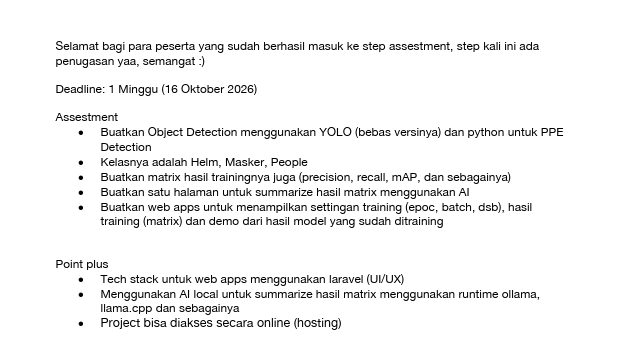
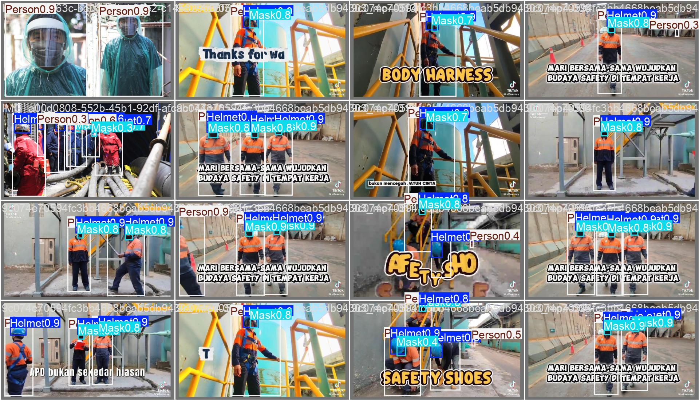
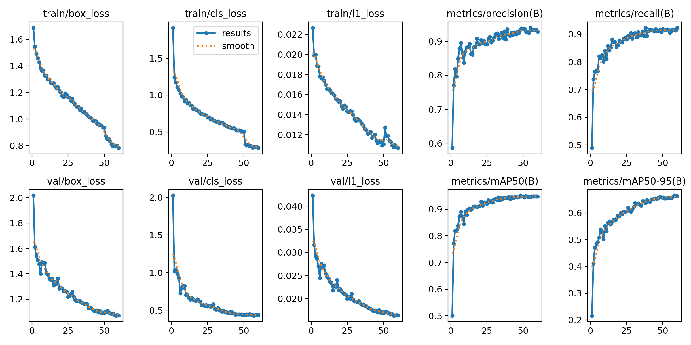
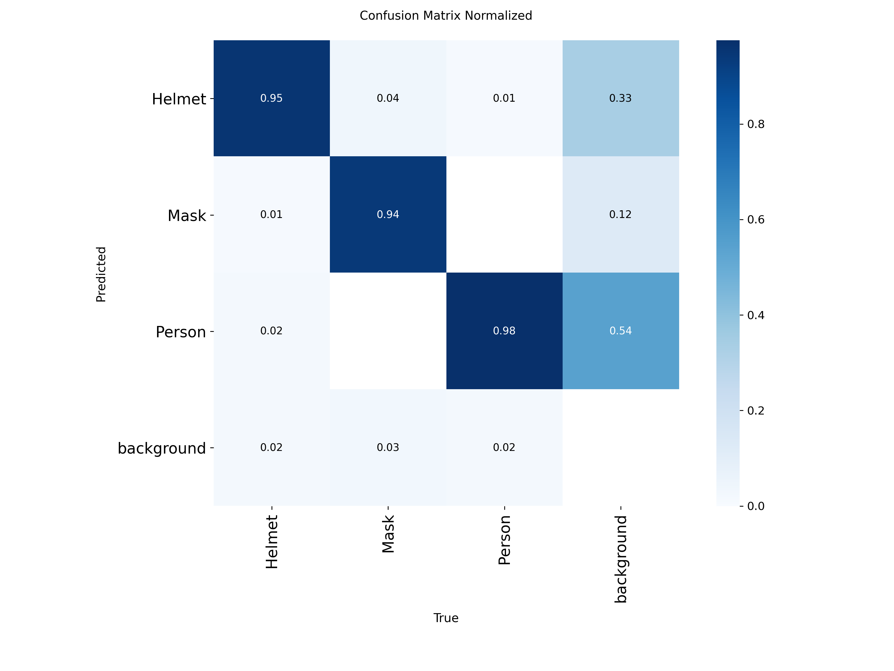
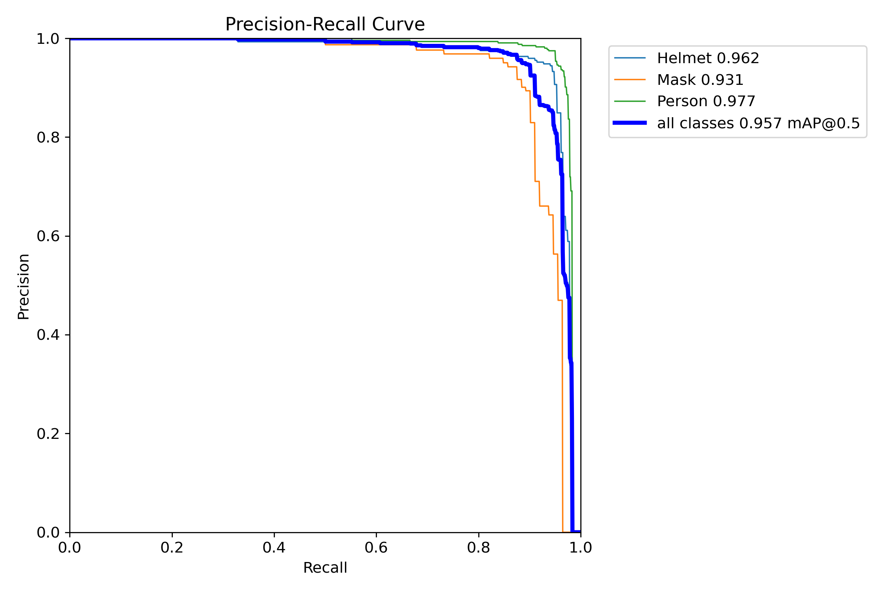
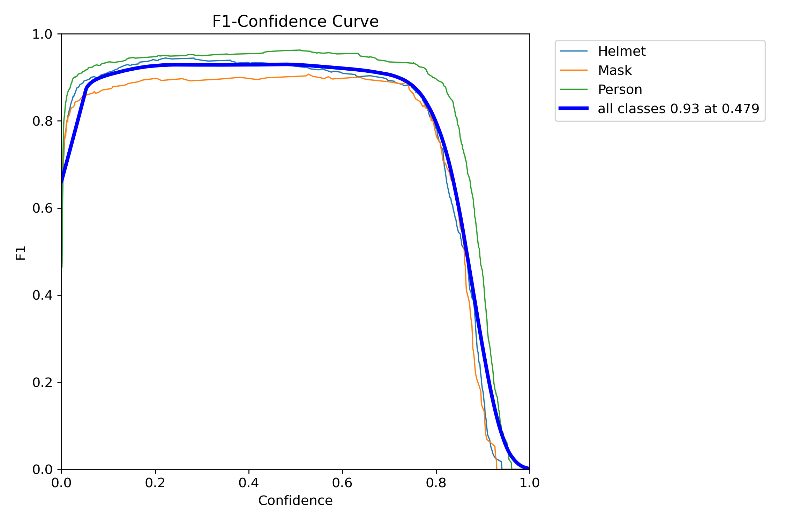
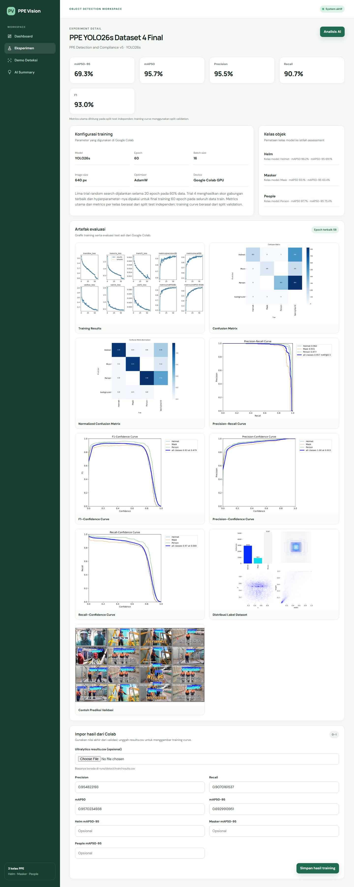

Assessment object detection · bukti final
PPE Vision
Bukti Pemenuhan Ketentuan
Jawaban per butir assessment: apa yang diminta, bagaimana implementasinya, bukti kode dan gambar, cara mendemonstrasikan, serta jawaban yang dapat disampaikan kepada assessor.
Model final: YOLO26s · 3 kelas
Portal: Laravel 12 + MySQL
AI lokal: Ollama llama3.2:3b
Audit: 15 Oktober 2026
Apakah “Tambah Eksperimen” diwajibkan?
Bagian mana yang tetap diperlukan?
| Fitur | Status terhadap syarat | Keputusan final |
|---|---|---|
| Daftar/detail Eksperimen | Membantu menampilkan setting, metrik, dan artefak. | Dipertahankan read-only. |
| Tombol Eksperimen Baru | Fitur tambahan tracking; tidak diminta. | Dihapus agar tidak memberi kesan Laravel menjalankan training. |
| Form impor hasil | Mempermudah development; tidak diminta. | Tetap tersedia hanya ketika operasi admin lokal diaktifkan. |
| Grafik dan detail model final | Langsung memenuhi ketentuan. | Wajib dipertahankan. |
Bagaimana data final diperbarui?
Data model final berasal dari hasil training/evaluasi, metadata checkpoint, dan seeder. Production memakai ALLOW_ADMIN_WRITES=false karena belum ada login admin. UI online bersifat read-only dan pengunjung tidak dapat membuat record baru atau mengubah hasil final.
Ketentuan asli dan hasil pemetaan

| No. | Ketentuan | Status | Bukti utama |
|---|---|---|---|
| 1 | Object Detection menggunakan YOLO dan Python untuk PPE Detection | Terpenuhi | Python, Ultralytics YOLO, best.pt, demo Streamlit. |
| 2 | Kelas Helm, Masker, People | Terpenuhi | Metadata checkpoint dan hasil deteksi tiga kelas. |
| 3 | Matriks hasil training: precision, recall, mAP, dsb. | Terpenuhi | Kartu dashboard, per-class metrics, sembilan artefak. |
| 4 | Satu halaman summary hasil matriks menggunakan AI | Terpenuhi | AI Summary + Ollama + fallback tervalidasi. |
| 5 | Web menampilkan setting training, hasil, dan demo | Terpenuhi | Detail eksperimen dan Demo Deteksi. |
| + | Web app memakai Laravel (UI/UX) | Terpenuhi | Laravel 12, Blade, responsive CSS. |
| + | AI lokal runtime Ollama/llama.cpp | Terpenuhi | Ollama 0.40.4, llama3.2:3b. |
| + | Dapat diakses online | Terpenuhi | InfinityFree + Streamlit Community Cloud. |
Struktur jawaban
Object Detection YOLO + Python untuk PPE
Terpenuhi Sistem benar-benar memuat checkpoint YOLO di Python dan menjalankan inferensi bounding box; bukan sekadar menampilkan gambar hasil statis.
Apa yang diminta?
Aplikasi harus mendeteksi objek PPE menggunakan keluarga YOLO dan implementasi Python.
Implementasi
inference_service/models/best.ptadalah checkpoint final YOLO26s.streamlit_app/app.pymemuat checkpoint melaluiultralytics.YOLO.- Fungsi
predict_frame()memanggilmodel.predict(). - Input didukung: gambar, video, dan kamera.
inference_service/main.pymenyediakan alternatif API FastAPI lokal.


Jawaban saat ditanya
best.pt dimuat oleh Streamlit/FastAPI, lalu model.predict menghasilkan kelas, confidence, dan bounding box untuk gambar, video, atau kamera.”Cara membuktikan langsung
- Buka Demo Deteksi.
- Pilih tab gambar/kamera.
- Masukkan input yang memuat PPE.
- Tunjukkan kotak, kelas, confidence, dan ringkasan jumlah deteksi.
- Jika cold start, tunggu status “Model siap”.
Kelas Helm, Masker, dan People
Terpenuhi Checkpoint memiliki tiga kelas sumber dan aplikasi memetakannya ke istilah assessment.
| ID/logika model | Nama sumber | Nama aplikasi | Ditampilkan sebagai |
|---|---|---|---|
| 0 | Helmet | helm | Helm |
| 1 | Mask | masker | Masker |
| 2 | Person | people | People |
Bukti berlapis
Checkpoint metadata
model-info.json menyimpan kelas sumber dan mapping.
UI
Sidebar, detail, dashboard, dan demo menampilkan Helm · Masker · People.
Evaluasi
Per-class metrics tersedia untuk masing-masing kelas.
Prediksi
Streamlit memetakan hasil sumber menjadi istilah aplikasi.
Jawaban saat ditanya
Metrik dan matriks hasil training
Terpenuhi Dashboard menampilkan metrik test independen dan halaman detail menyediakan grafik training serta matriks evaluasi asli.
| Metrik final test | Nilai | Makna ringkas |
|---|---|---|
| Precision | 95,5% | Sebagian besar prediksi positif benar. |
| Recall | 90,7% | Sebagian besar objek sebenarnya ditemukan. |
| F1 | 93,0% | Keseimbangan precision dan recall. |
| mAP50 | 95,7% | AP rata-rata pada IoU 0,50. |
| mAP50-95 | 69,3% | Ukuran lebih ketat pada IoU 0,50–0,95. |

Bukti artefak




Mengapa test dan validation dipisah?
Kurva sepanjang epoch berasal dari validation karena digunakan untuk memantau proses dan memilih checkpoint. Nilai headline berasal dari 212 gambar test independen untuk menilai model final secara lebih objektif.
Jawaban saat ditanya
Satu halaman summary menggunakan AI
Terpenuhi Halaman AI Summary menerjemahkan metrik menjadi kesimpulan, kelas yang perlu perhatian, risiko operasional, dan tiga rekomendasi.

Mengapa desainnya aman dari angka halusinasi?
- Prompt melarang model menulis angka/persentase.
- Laravel menghitung dan menampilkan angka dari database.
- Ollama hanya menghasilkan risiko dan rekomendasi dalam JSON schema.
- Respons harus memiliki tepat tiga rekomendasi.
- Jika format salah atau Ollama gagal, sistem memakai summary rule-based.
Jawaban saat ditanya
Web menampilkan setting, hasil, dan demo
Terpenuhi Tiga kebutuhan berada dalam portal yang sama.
| Yang diminta | Lokasi | Isi |
|---|---|---|
| Setting training | Eksperimen → Detail | Model, epoch 60, batch 16, image 640, AdamW, Google Colab GPU, catatan random search. |
| Hasil training/matriks | Dashboard + Detail | Lima metrik, per kelas, sembilan artefak evaluasi. |
| Demo model | Demo Deteksi | Streamlit ter-embed dengan gambar, video, kamera. |

Integrasi demo
Laravel tetap menjadi portal dan navigasi utama, sedangkan Python/YOLO berjalan di Streamlit Cloud. Pemisahan diperlukan karena InfinityFree hanya menyediakan PHP/MySQL dan tidak menjalankan runtime Python/PyTorch.
Jawaban saat ditanya
Web app menggunakan Laravel (UI/UX)
Terpenuhi Portal menggunakan Laravel Framework 12.69.3 dengan Blade, controller, Eloquent, migration, seeder, validation, CSRF, dan test.
Bukti UI/UX
- Navigasi konsisten: Dashboard, Eksperimen, Demo Deteksi, AI Summary.
- Responsive layout dan status visual.
- Metrics cards, tabel, bar, chart, artifact gallery.
- Empty state dan pesan keberhasilan/kegagalan.
- Bahasa Indonesia yang konsisten dengan konteks assessment.
Jawaban saat ditanya
AI lokal menggunakan Ollama
Terpenuhi Ollama 0.40.4 menjalankan llama3.2:3b pada komputer lokal melalui 127.0.0.1:11434.
Alur integrasi
- Laravel mengambil metrik dari
TrainingRun. - Service membuat prompt terstruktur.
- HTTP POST dikirim ke
/api/generate. - Ollama mengembalikan JSON risiko dan tiga rekomendasi.
- Laravel memvalidasi, menyusun Markdown, dan menyimpan ke MySQL.
- Production menampilkan hasil tersimpan tanpa membuka Ollama ke internet.
Mengapa bukan live dari InfinityFree?
127.0.0.1 pada InfinityFree berarti server InfinityFree sendiri, bukan laptop pengguna. Paket gratis juga tidak menjalankan Ollama. Karena itu narasi dibuat secara lokal lalu disimpan. Ini tetap memenuhi penggunaan AI lokal sekaligus menjaga model lokal tidak diekspos tanpa autentikasi.
Jawaban saat ditanya
Project dapat diakses online
Terpenuhi Portal dan demo Python menggunakan dua hosting yang sesuai dengan kebutuhan runtime masing-masing.
| Komponen | Hosting | Alasan |
|---|---|---|
| Laravel + MySQL | InfinityFree | Mendukung PHP, MySQL, SSL, dan subdomain. |
| Python + YOLO | Streamlit Community Cloud | Mendukung Python, Ultralytics, OpenCV, dan PyTorch. |
| Ollama | Komputer lokal | Memenuhi AI lokal dan tidak diekspos ke publik. |
Tautan
- Portal: https://ppe-vision.infinityfreeapp.com/
- Eksperimen: https://ppe-vision.infinityfreeapp.com/experiments
- AI Summary: https://ppe-vision.infinityfreeapp.com/experiments/1/summary
- Demo: https://ppe-vision.infinityfreeapp.com/detection
Jawaban saat ditanya
Bagaimana seluruh bukti saling terhubung?
Sumber data utama
| Informasi | Sumber kebenaran | Konsumen |
|---|---|---|
| Bobot dan kelas | best.pt + model-info.json | Streamlit/FastAPI. |
| Metrik final | Evaluasi test + metadata model | Seeder, database, dashboard, summary. |
| History epoch | results.csv | Training curve. |
| Artefak visual | Output Ultralytics | Detail eksperimen. |
| Narasi AI | Ollama + validasi Laravel | AI Summary. |
Bukti bahwa implementasi benar-benar berjalan
Saat laporan diperbarui, test Laravel menghasilkan 15 passed, 83 assertions.
| Pengujian | Yang dibuktikan |
|---|---|
| Dashboard metrics | Nilai final dan per kelas tampil sesuai model metadata. |
| Save training configuration | Record eksperimen lokal dapat dibuat sebagai draft. |
| Import metrics | Nilai 0–1 tersimpan dan status menjadi completed. |
| Ollama summary fake | Request schema, engine, Markdown, dan rekomendasi benar. |
| Fallback summary | Halaman tetap berfungsi tanpa Ollama. |
| Streamlit embed | Iframe dengan ?embed=true tersedia. |
| Inference persistence | Hasil FastAPI dapat disimpan Laravel pada mode lokal. |
| Production write lock | Create/import/generate ditolak dan tombol disembunyikan. |
| Installer token | Installer tersembunyi jika token kosong. |
Audit keamanan dependency
- Composer audit: tidak ada security vulnerability advisory.
- npm audit: 0 vulnerability.
- Secret tidak disertakan dalam Git atau laporan.
Cara membuktikan setiap ketentuan
ollama serve dan buat ulang summary; bila online, jelaskan hasil tersimpan.Naskah pembuka singkat
Pertanyaan yang kemungkinan muncul
streamlit_app/app.py dan inference_service/main.py; checkpoint ada di inference_service/models/best.pt.Apa yang bukan bagian syarat dan apa batasannya?
| Hal | Status | Penjelasan yang benar |
|---|---|---|
| CRUD eksperimen | Opsional | Tracking tambahan, bukan kebutuhan assessment. |
| Training langsung di web | Tidak diminta | Training dilakukan di Colab. |
| Login admin | Belum ada | Karena itu production read-only. |
| Ollama live online | Tidak diperlukan | Syarat justru menyebut AI lokal. |
| Deteksi kepatuhan relasional | Belum | Model mendeteksi objek, belum memastikan helm/masker milik orang tertentu. |
| Siap industri | Belum diklaim | Masih perlu field test, monitoring, auth, dan dataset lebih luas. |
Rekomendasi keputusan
Untuk final presentation, gunakan portal sebagai read-only evidence dashboard. Pertahankan Dashboard, detail model final, artifact gallery, Demo Deteksi, dan AI Summary. Jika ingin pembersihan lanjutan, hapus route/form create dan import—tetapi lakukan sebagai perubahan terpisah setelah backup serta test.
Sebelum dikirim atau dipresentasikan
Teknis
- □ Dashboard online dapat dibuka.
- □ Detail eksperimen menampilkan setting dan artifact.
- □ Streamlit sudah bangun dan menunjukkan “Model siap”.
- □ Satu gambar uji yang memuat tiga kelas disiapkan.
- □ AI Summary tampil dan angka sama dengan dashboard.
- □ `/install` tetap 404.
- □ `.env`, token, dan password tidak dibuka.
Pemahaman
- □ Bisa menjelaskan precision vs recall.
- □ Bisa menjelaskan mAP50 vs mAP50-95.
- □ Bisa menjelaskan validation vs test.
- □ Bisa menjelaskan mengapa Masker terlemah.
- □ Bisa menjelaskan Laravel vs Python vs Ollama.
- □ Bisa menjelaskan bahwa daftar Eksperimen adalah bukti setting dan hasil, bukan pemicu training.
- □ Bisa menyebutkan batasan tanpa merendahkan project.